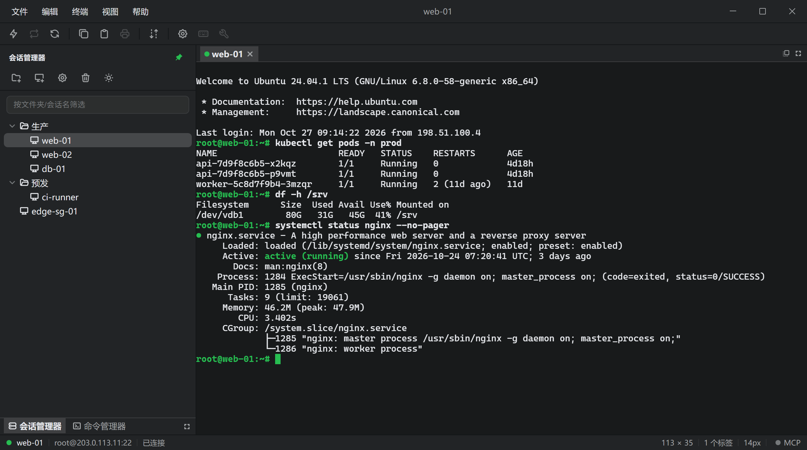

快速连接与四种认证
协议、主机、端口、用户名一屏填完。公钥、键盘交互、密码、GSSAPI 可按顺序尝试，失败时回传具体是哪一种没过。
会话树、终端、命令库、SFTP 都在一个窗口里。SecureCRT 和 WinSCP 的配置整棵搬过来，一个不丢。Tauri 2 + Rust 写成，3.7 MB，不是 Electron 套壳，还内置给 AI 智能体用的 MCP 服务。

界面按会话管理器 / 快速连接 / 命令管理器的布局组织，键盘和右键菜单都能走通。
下面四组是日常最常用的动线：连上去、搬过来、交给智能体、换套配色。
会话按文件夹组织成一棵树，双击即连；剪切、复制、粘贴、重命名、属性都在右键里。树结构落盘为 JSON，重启后原样还在。
文件 → 导入配置… 读 SecureCRT 导出的会话 XML 或 WinSCP.ini，解析出的会话连同分组层级一起追加到当前会话树，不用一台台重建。

勾选后在本机起一个 Streamable HTTP 的 MCP server，把已存会话变成工具：列表、执行、发送、读取、关闭，智能体在真实终端里跑命令。

配色 token 集中在一处，界面与终端读同一组变量。切换时终端的前景、背景、光标、选区与 ANSI 色一起跟上，不会只换外框。

协议、主机、端口、用户名一屏填完。公钥、键盘交互、密码、GSSAPI 可按顺序尝试，失败时回传具体是哪一种没过。
显示名和实际发送的文本分开存，允许多行。双击发到当前终端，也可以广播给全部就绪会话，或只发给当前可见的那个。
本地与远端双栏对照，上传下载带进度与传输列表。文件走你已经开着的那条 SSH 会话，不用再留一个客户端。
断线只给一条明确提示，按回车就重连，不做猜心思的自动重连；长时间空闲掉线由 SSH 层保活压住。
帮助 → 关于里直接检查更新。Windows 与 Linux AppImage 可自助升级；macOS 需签名包，请手动下载 dmg 覆盖。
Windows x64、macOS Apple Silicon、Linux x86_64 由同一条 GitHub Actions 打包，版本号、更新源与校验值都对齐。
配色取自应用图标的两档绿，正文与界面色的对比度按 WCAG AA 校过。
终端的 ANSI 红黄绿单独调过一版，深色底上中文报错也看得清。
没有账号系统，也没有服务端。会话与口令只写进本机的应用数据目录。
MCP 默认关闭、只监听 127.0.0.1，逐请求校验令牌。
Windows 上口令经系统 DPAPI 加密后再写盘；其他平台没有可移植的系统级密钥，请把数据目录纳入磁盘加密。
MCP server 绑定 127.0.0.1，端口可改；每个请求校验 Authorization: Bearer <token>，令牌可轮换。
它只能点用你已经存下的凭据，既收不到也看不到口令本身；关掉开关会连带拆掉 agent 遗留的 shell。
除了你主动发起的 SSH 连接和检查更新时读 latest.json，应用不往外发数据；本页也是纯静态，不加载统计脚本。
文件 → MCP 服务… 勾选后，OneCRT 在 127.0.0.1:39117/mcp（端口可改）起一个
Streamable HTTP 的 MCP server，把已存会话变成六个工具。
弹窗里一键复制配置，直接粘进 Qoder、Claude Desktop 或 Cursor。
sessions_list、terminals_list、exec、send、read、close
弹窗里的复制按钮给出可直接粘进客户端的配置：
{
"mcpServers": {
"onecrt": {
"type": "http",
"url": "http://127.0.0.1:39117/mcp",
"headers": { "Authorization": "Bearer <你的令牌>" }
}
}
}SSH 这一层的迁移路径都留着：配置能搬过来，智能体能在同一批会话上调工具。
安装包与校验值都在 GitHub Releases 上，直接下载即可，不需要账号，也没有功能限制。
Windows 与 Linux AppImage 支持应用内更新；macOS 请手动下载 dmg 覆盖。
Windows 10 / 11 · x64
shellx-0.2.0-windows-x64-setup.exe
约 3.7 MB · NSIS 安装包
下载 Windows 版macOS 12 及以上 · Apple Silicon
shellx-0.2.0-macos-arm64.dmg
约 4.9 MB · 未签名，首次打开用右键 → 打开
下载 macOS 版x86_64 发行版
shellx-0.2.0-linux-x64.deb · shellx-0.2.0-linux-x64.AppImage
deb 约 6.2 MB · AppImage 约 84.6 MB
安装包文件名沿用 shellx 前缀，与本机数据目录同名；应用内显示名为 OneCRT。Windows 与 Linux（AppImage）支持应用内自动更新，macOS 的自动更新按 Tauri 要求需要 Developer ID 签名，当前请手动下载 dmg 覆盖。全部产物与 SHA256
不收费，也不需要账号。安装包直接从 GitHub Releases 下载，全部功能都在里面，没有试用期限或功能墙。
密码、公钥（OpenSSH 私钥，路径支持 ~ 展开）、键盘交互和 GSSAPI。一个会话可以配多种认证并按顺序尝试，失败时会回传具体原因，不是笼统一句"连不上"。
只存在本机的应用数据目录，不会上传。Windows 上口令经系统 DPAPI 加密后再写盘；其他平台没有可移植的系统级密钥，口令以明文存在同一目录的会话文件里，请把该目录纳入磁盘加密范围。
帮助 → 关于 OneCRT… 里会显示这个目录的具体位置，点「打开」直接在文件管理器里定位它。
可以。文件 → 导入配置… 支持 SecureCRT 导出的会话 XML 和 WinSCP 的 WinSCP.ini，解析出的会话连同分组层级一起追加到当前会话树。
这两种配置文件都不含可用的明文口令，导入的会话在首次连接时补凭据。SecureCRT 与 WinSCP 是各自权利人的商标与产品，OneCRT 与它们没有隶属关系。
Windows x64（NSIS 安装包）、macOS 12 及以上的 Apple Silicon（dmg）、Linux x86_64（deb 与 AppImage）。三端产物由同一条 GitHub Actions 流水线打包。
macOS 包未做 Developer ID 签名与公证。首次打开请在访达里右键应用图标选择「打开」，或在系统设置 → 隐私与安全性中允许运行。
开启后 OneCRT 在本机 127.0.0.1 上起一个 Streamable HTTP 的 MCP server，把已保存的会话作为工具开放给 Qoder、Claude Desktop、Cursor 这类智能体。
它默认关闭、只监听回环地址，每个请求都要校验 Bearer 令牌；智能体只能点用你已经存下的凭据，既收不到也看不到口令本身。
没有埋点和遥测上报。除了你主动发起的 SSH 连接，以及检查更新时读取 GitHub Releases 上的 latest.json，应用不会向任何服务发送数据；本官网也是纯静态页面，同样不加载统计脚本。